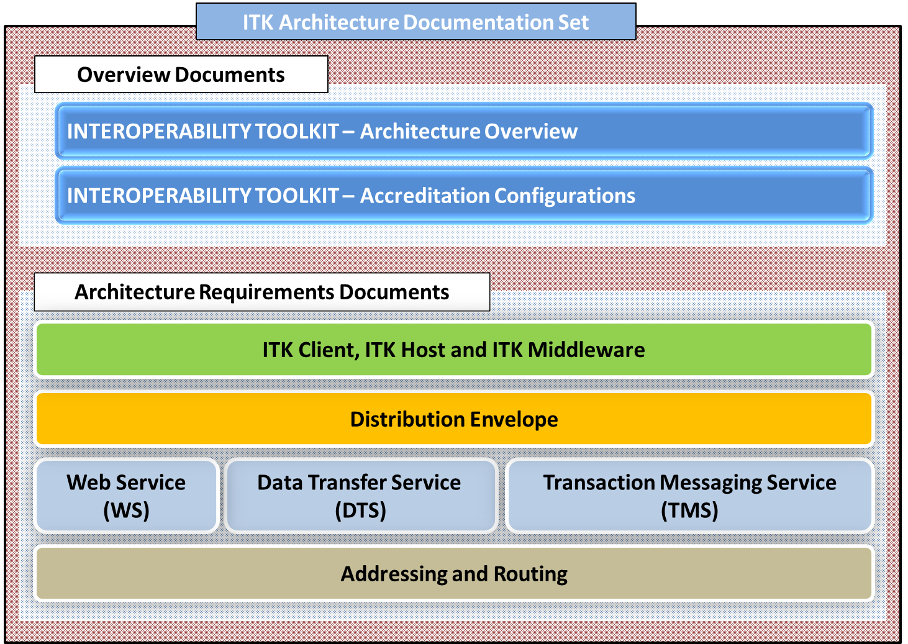

Accreditation Configurations
In order to receive accreditation, a vendor must demonstrate the technical conformance of their product with the ITK requirements by submitting evidence of this conformance to HSCIC for review. This will be achieved through use of the ITK Testbench, along with completion of the Supplier Certified Requirements Coverage spreadsheet, and by providing supporting evidence. All successful accreditations are listed within the ITK Accreditation Catalogue.
This ITK accreditation pack includes guidance, which describes what constitutes the appropriate level of test evidence; this test evidence can of course be supplemented by vendor specific interface tests where appropriate. Submission of physical test evidence, and the completed Supplier Certified Requirements Coverage spreadsheet, will be required as part of a vendor's submission to successfully complete the process.
Once you are familiar with the ITK standards documentation set and are about to start work on your accreditation submission we strongly recommend that you contact the ITK Accreditation team. The team will be able to advise you on your submission preparation, give guidance on how to complete the spreadsheet, and what evidence will be required. As an additional service, we offer workshops to cover the basics of the ITK Testbench tools, the ITK requirements, and any other points of interest, with the key aim of getting you started with your ITK accreditation submission. The team will be able to help you at every stage of your submission. Initially contact the team via the Accreditation mailbox:- itkaccreditation@hscic.gov.uk
Any supplier interested in initiatives bringing together the use of ITK with becoming compliant to certain spine requirements e.g. Spine Mini Services Provider or other HSCIC led initiatives incorporating ITK accreditation e.g. Clinical Dashboards should contact HSCIC, initially via itkaccreditation@hscic.gov.uk to discuss.
| Download » | |
|---|---|
| ITK Accreditation Configurations (pdf format) | View |